UNESCO – organizacja wyspecjalizowana ONZ, której podstawowym celem jest wspieranie współpracy międzynarodowej w dziedzinie kultury, sztuki i nauki, a także wzbudzanie szacunku dla praw człowieka, bez względu na kolor skóry, status społeczny i religię.
Mapa zabytków UNESCO w Polsce
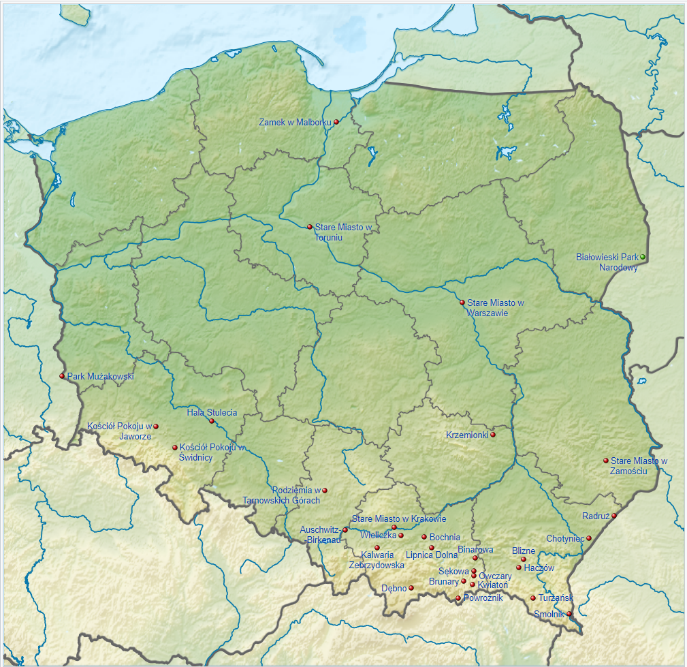Co to lista światowego dziedzictwa UNESCO?
Lista światowego dziedzictwa to lista obiektów dziedzictwa kulturowego i dziedzictwa naturalnego o „wyjątkowej powszechnej wartości” dla ludzkości prowadzona przez organizację wyspecjalizowaną ONZ UNESCO. Ratyfikowały ją 193 państwa
Dziełem UNESCO są:
- Konwencja w sprawie zwalczania dyskryminacji w dziedzinie oświaty,
- Konwencja o ochronie dóbr kultury w razie konfliktu zbrojnego
- Konwencja w sprawie ochrony niematerialnego dziedzictwa kulturowego
- Konwencja ramsarska o ochronie obszarów wodno-błotnych
- Siedziba UNESCO mieści się w Paryżu
- Program działalności UNESCO obejmuje :
- Działania na rzecz rozwoju nauki i kultury
- Udzielanie pomocy materialnej, technicznej i kadrowej w organizowaniu oświaty
ŚWIATOWE DZIEDZICTWO UNESCO W POLSCE
Stare Miasto w Krakowie
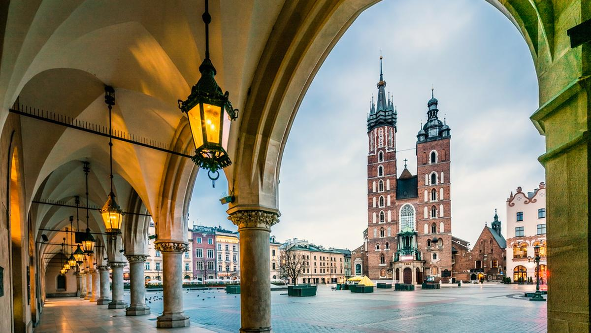Wpisane na Listę Światowego Dziedzictwa w 1978 roku, jako jedno z pierwszych 12 obiektów na świecie.
Unesco w Krakowie obejmuje Stare Miasto w obrębie dawnych murów - Rynek, Wzgórze Wawelskie oraz dzielnicę Kazimierz ze Stradomiem.
Centralne miejsce wzgórza stanowi zamek, dawna siedziba polskich władców.
W wawelskiej katedrze spoczywa kilkunastu królów , m.in. Władysław Łokietek, Kazimierz Wielki, Zygmunt August, a także Adam Mickiewicz, czy Tadeusz Kościuszko.
Rynek Główny to jeden z największych placów Europie.
Kopalnia Soli w Wieliczce i Kopalnia Soli w Bochni
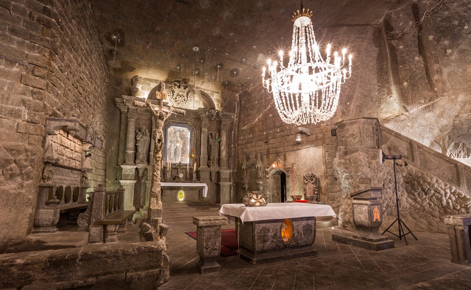Kopalnia Soli w Wieliczce na Listę Unesco została wpisana w 1978 roku, a w 2013 roku wpis rozszerzono o Kopalnię Soli w Bochni i Zamek Żupny w Wieliczce.
Stanowi ona jedyny obiekt górniczy na świecie czynny od średniowiecza do chwili obecnej.
Dziś kopalnia w Wieliczce obejmuje dziewięć poziomów.
Pierwszy rozciąga się na głębokości 64, zaś ostatni 327 metrów. Trzy tysiące dawnych wyrobisk połączonych jest 360 kilometrami chodników.
W kopalni wytyczonych zostało kilka tras turystycznych.
Auschwitz-Birkenau
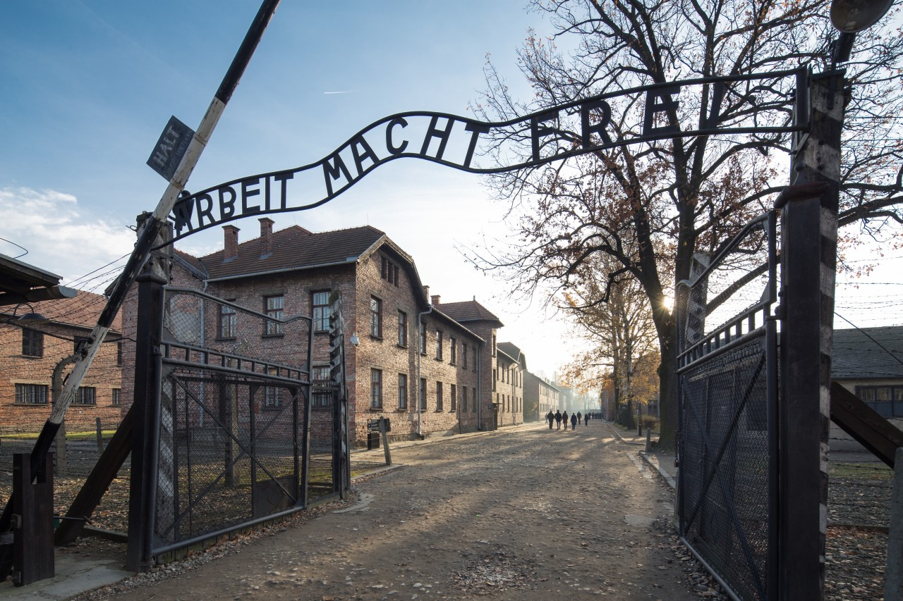Niemiecki nazistowski obóz koncentracyjny w okupowanej Polsce z lat 1940-1945. Największy obóz zagłady w dziejach ludzkości Symbol Holocaustu.
Został wpisany na Listę w 1979 r.
Dziś można tam obejrzeć między innymi baraki, w których przetrzymywani byli więźniowie,
ogrodzenia z drutu kolczastego, wieżyczki strażnicze, komorę gazową, krematorium oraz liczne materialne dowody zbrodni
Puszcza Białowieska
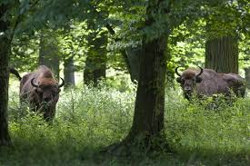Fragment tego pierwotnego lasu leżącego na terytorium Polski i Białorusi, z liczną populacją żubra, zostało wpisane na Listę Unesco w 1979 roku.
Formalnie Puszcza Białowieska stała się piątym w historii przyrodniczym obiektem wpisanym na Listę Światowego Dziedzictwa.
Obiekt transgraniczny, ulokowany na pograniczu polsko-białoruskim.
Na terenie Puszczy Białowieskiej występuje przeszło 800 gatunków roślin naczyniowych,
ponad trzy tysiące gatunków roślin zarodnikowych i grzybów, 120 gatunków ptaków oraz 60 gatunków ssaków.
Stare Miasto w Warszawie
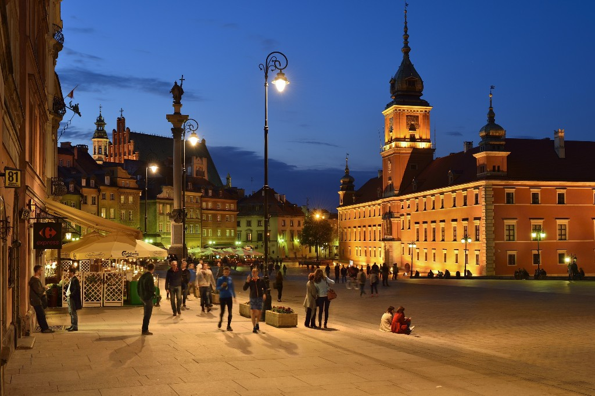Stare Miasto w Warszawie zostało wpisane na Listę Unesco w 1980 roku.
Stanowi wyjątkowy przykład odbudowy zabytków niemal całkowicie zniszczonych.
Najbardziej znanym budynkiem Starego Miasta jest Zamek Królewski. Po przeniesieniu stolicy z Krakowa był siedzibą polskich królów.
Warszawskie Stare Miasto to również podwójny ciąg murów obronnych oraz najbardziej charakterystyczna część fortyfikacji - Barbakan.
Stare Miasto w Zamościu
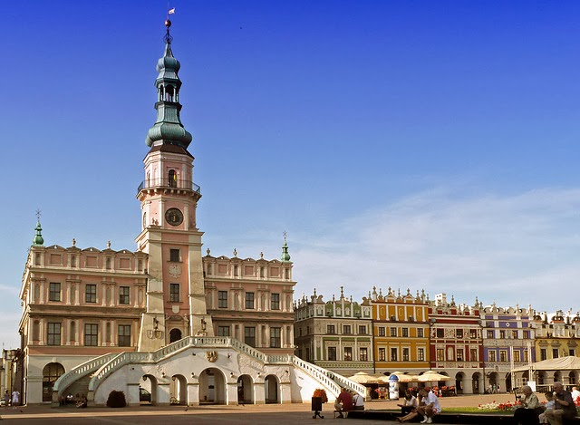Wpisane na Listę Światowego Dziedzictwa Unesco w 1992 roku renesansowe miasto zostało założone w XVI wieku przez kanclerza Jana Zamoyskiego, na szlaku handlowym, łączącym Europę Zachodnią i Północną z Morzem Czarnym. Renesansowe miasto, w którym zachował się pierwotny układ ulic, pozostałości dawnych fortyfikacji i liczne zabytkowe budowle. Zamość został oparty na planie pięcioboku z centralnie usytuowanym Rynkiem Wielkim i dwoma mniejszymi placami targowymi .
Średniowieczny zespół miejski Torunia
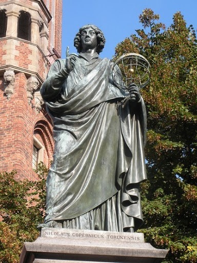Wpisany na Listę Unesco został w 1997 roku, miasto założone przez Zakon Krzyżacki w XII wieku. Perła gotyckiej architektury. Pamiątką po czasach największej świetności są kamienice na Starym i Nowym Mieście, a wśród nich dom, w którym najpewniej przyszedł na świat Mikołaj Kopernik. Nad Wisłą do dziś w doskonałym stanie zachowały się duże fragmenty murów obronnych z XIII-XV wieku wraz z bramami wjazdowymi oraz Krzywą Wieżą. Symbol Torunia to pierniki.
Zamek krzyżacki w Malborku
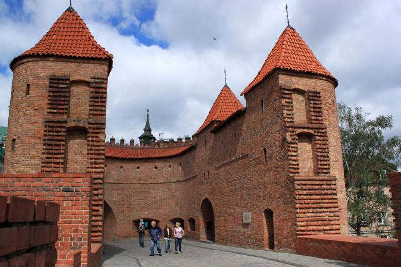Na listę UNESCO został wpisany w 1997 roku. Największa twierdza w Europie. Warownia na brzegu Nogatu istniała już w XIII wieku. Zamek należał do Krzyżaków do połowy XV wieku, potem stał się własnością polskich królów. W 1961 stał się siedzibą Muzeum Zamkowego
Kalwaria Zebrzydowska
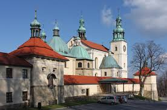Manierystyczny zespół architektoniczny i krajobrazowy wraz z parkiem pielgrzymkowym wpisany na Listę Unesco w 1999 roku. Sanktuarium pochodzi z XVII wieku i od tamtej pory pozostaje niemal niezmieniony. Stworzone na wzór Jerozolimy. Budowle utrzymane były w stylu manieryzmu niderlandzkiego, a później rozbudowane w stylu barokowym z elementami rokoko. W bazylice znajduje się dziś m.in. cudowny obraz Matki Bożej Kalwaryjskiej z pierwszej połowy XVII wieku.
Kościół Pokoju w Jaworze i Kościół Pokoju w Świdnicy
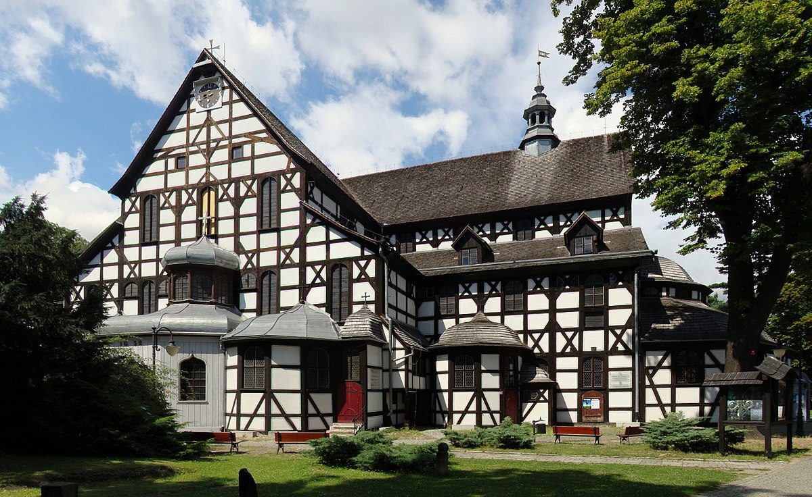Kościoły Pokoju na Dolnym Śląsku są na Liście Unesco od 2001 roku. Wzniesione w połowie XVII wieku są największymi w Europie drewnianymi budowlami sakralnymi o konstrukcji szkieletowej.Powstały w połowie XVII wieku na skutek porozumień zawartych po Wojnie Trzydziestoletniej, którą wieńczył Pokój Westfalski.Katolicki cesarz Ferdynand III Habsburg zgodził się, by na Dolnym Śląsku powstały trzy protestanckie świątynie. Mogły one zostać wykonane jedynie z materiałów nietrwałych, jak drewno, glina, czy słoma.
Drewniane kościoły południowej Małopolski
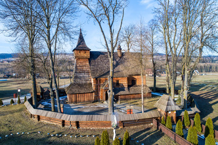Na liście UNESCO od 2003 roku. Wpis obejmuje sześć świątyń znajdujących się we wsiach Binarowa, Blizne, Dębno, Haczów, Lipnica Murowana i Sękowa. Stanowią one drugie najstarsze skupisko drewnianych kościołów w Europie po kościołach klepkowych w Norwegii. Zostały zbudowane techniką zrębową. Kościół pod wezwaniem św. Michała Archanioła w Binarowej z 1500 roku posiada najstarszą znaną wieżę z drewna.
Park Mużakowski
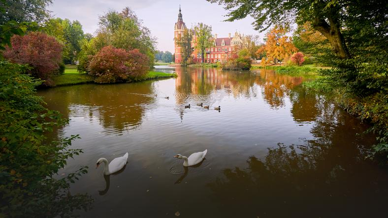Na liście UNESCO od 2004 roku. Uchodzi za światowej klasy arcydzieło sztuki ogrodowej. Rozległy park krajobrazowy rozciąga się po obydwu stronach Nysy Łużyckiej, w okolicach Łęknicy w województwie lubuskim i niemieckiego Bad Muskau. Zajmuje powierzchnię blisko 700 hektarów. Najbardziej charakterystyczne elementy parku to: Stary i Nowy Zamek, sztuczne odgałęzienie Nysy Łużyckiej zwane Nysą Hermanna, Park Górski, wąwozy i malownicze ścieżki zwane Drogą Helminy, Ścieżką Słowika, Drogą Klementyny. Na terenie Parku Mużakowskiego znajduje się też 50-hektarowe arboretum, gdzie podziwiać można 290 gatunków roślin.
Hala Stulecia we Wrocławiu
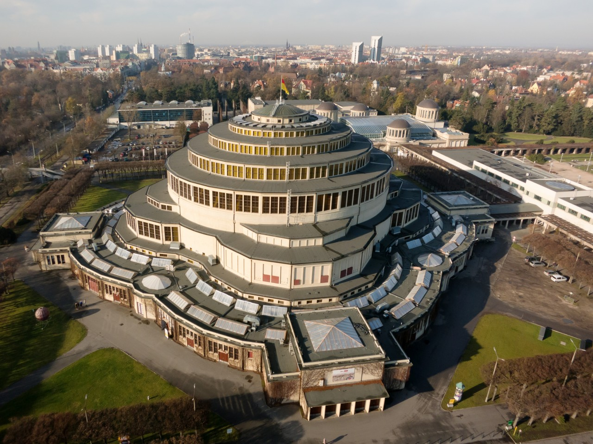Na listę UNESCO została wpisana w 2006 roku. Wzniesiona z wykorzystaniem żelbetonu hala była milowym krokiem w historii budownictwa. Powstała w latach 1911-1913 r.Wieńczyła ją kopuła o średnicy 67 metrów, na niej posadowiona została latarnia ze stali i szkła. Widownia hali była w stanie pomieścić przeszło sześć tysięcy osób. Wewnątrz stanęły też największe na świecie organy o 222 rejestrach i blisko 17 tysiącach piszczałek.
Drewniane cerkwie w polskim i ukraińskim regionie Karpat
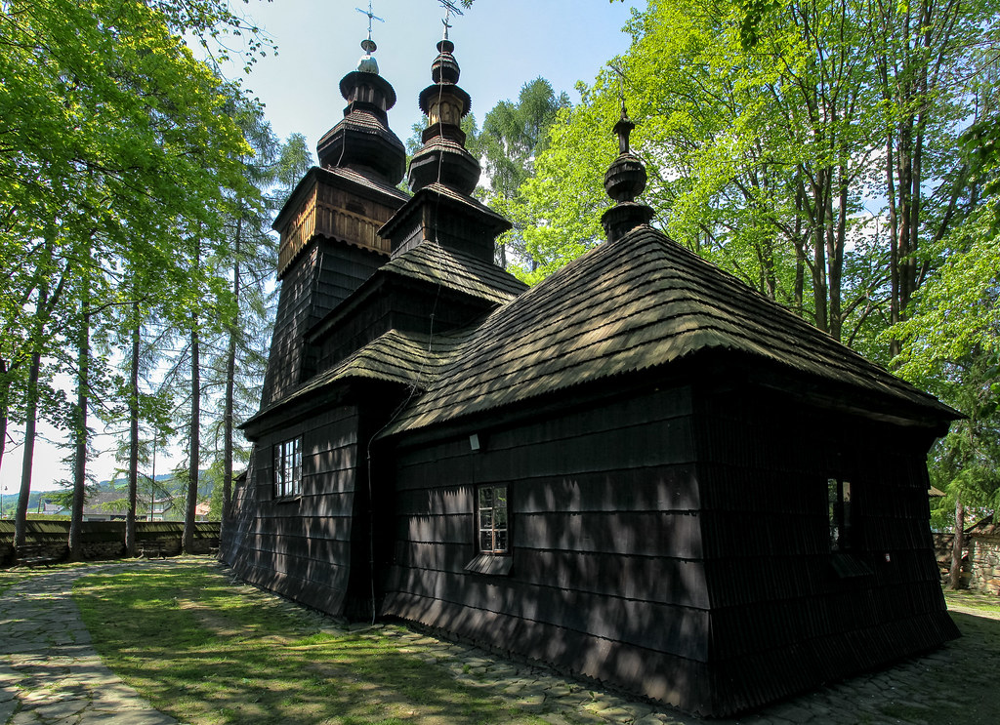Cerkwie z przełomu XV i XVI wieku są najstarszymi tego typu obiektami zachowanymi na terenach polskich i ukraińskich. W 2013 roku wpisano na listę aż 16 cerkwi, w tym 8 na terytorium Polski i 8 na Ukrainie. Świątynie powstawały od XVI do XIX wieku, charakteryzują się konstrukcją zrębową, zawierają symboliczne odniesienia do kosmogonii charakterystycznej dla danej społeczności.
Kopalnia Srebra w Tarnowskich Górach
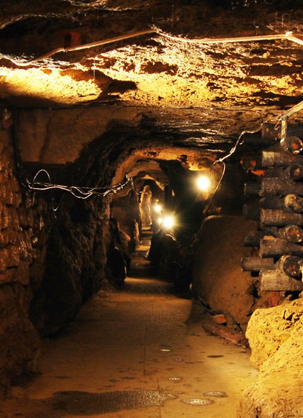To jedyna w Polsce podziemna trasa turystyczna umożliwiająca zwiedzanie podziemi dawnej kopalni kruszców srebronośnych, założonej w triasowych dolomitach i wapieniach. Od lipca 2017 jest wpisana na Listę Światowego Dziedzictwa UNESCO. Korytarze ciągną się tu pod całym miastem aż po pobliskie wioski, na przestrzeni 300 km. Obiekt obejmuje w całości podziemną kopalnię wraz ze sztolniami, szybami, galeriami oraz systemem gospodarowania wodami podziemnymi.
Krzemionki - region prehistorycznego górnictwa krzemienia pasiastego
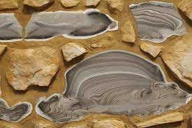Teren prahistorycznych kopalń krzemienia pasiastego w Krzemionkach koło Ostrowca Świętokrzyskiego ma status Muzeum i Rezerwatu Archeologiczno-Przyrodniczego i ze względu na unikatową architekturę podziemi oraz doskonale zachowany krajobraz pogórniczy i walory naukowe. objęty ochroną archeologiczną i przyrodniczą. Tzw. Krzemionki wpisane zostały na Listę Unesco w 2019 roku. Wydobywano tu unikatowy i piękny minerał - krzemień pasiasty o szarych odcieniach i jak nazwa wskazuje, w pasy.
Światowy Geopark Łuk Mużakowa
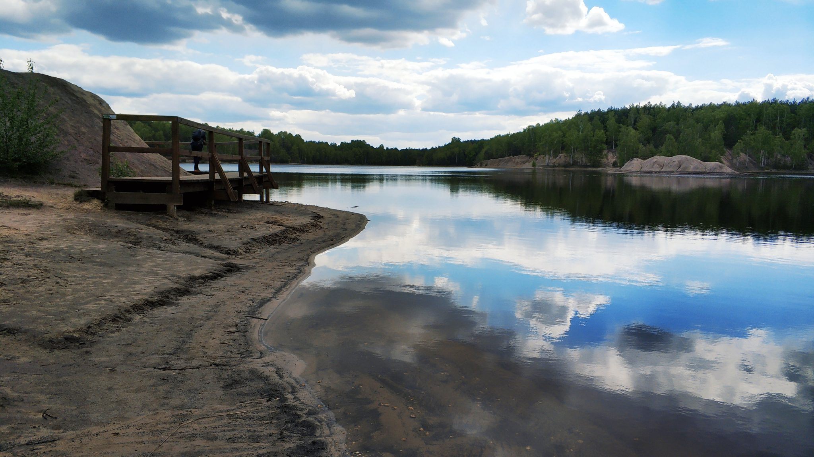Park krajobrazowy i geopark w województwie lubuskim założony został w celu ochrony szczególnego tworu geologicznego – moreny czołowej powstałej podczas zlodowacenia środkowopolskiego (Odry). Jest to obiekt transgraniczny polsko-niemiecki. Łuk Mużakowa jest uważany za jedyną na Ziemi morenę czołową widoczną z kosmosu. Wpisany do światowego dziedzictwa UNESCO w 2015 r.